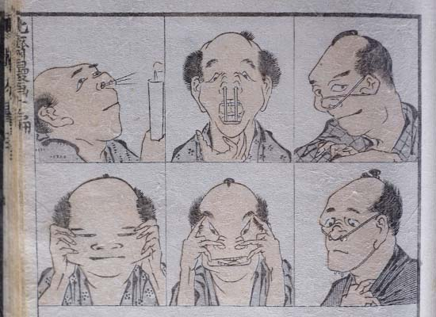

「北斎漫画」葛飾北斎
葛飾北斎の「北斎漫画」のなかに変顔をしている人がちらほらいるのをご存知でしょうか。実は絵の中の人物の表情をよく見ると、変な顔やゆるい癒し系な顔をしている人がたくさんいて面白いのですよ。

出典 https://yurulu.net/artbook/wp-content/uploads/2018/05/95c6b023dbf9b094d8440cd4f07ef79b.jpg
「百色面相」歌川国芳
北斎よりも写実的で滑稽な国芳の描いた百面相も、なかなか面白いのではないでしょうか。国芳の絵は、この百色面相として描かれた人々もいい表情をしてますが、猫の顔も面白いことで有名です。「国芳 猫の百面相」とかでぜひ検索してみてください。おもしろ可愛い変顔が見られますよォ。

出典 https://twitter.com/wolf_centipede/status/1213397731630149632?ref_src=twsrc%5Etfw
「醜容術」宮武外骨
明治期の宮武外骨による挿絵（おそらく滑稽新聞という本に収録されたのものでしょうか？調べましたが雑誌名まではわかりませんでした、あやふやな情報源ですみません）「醜容術」という名前で変顔を作る様々な方法が描かれています。
実はこれが「醜容術カメラ」の由来です。
実はこれが「醜容術カメラ」の由来です。

出典 https://www.aojc.co.jp/staff_blog/2010/07/05/post_19/
「新版三十二相」小林清親
明治を代表する浮世絵師である小林清親による百面相シリーズの一部の作品です。本来は美しい風景の浮世絵の方が有名ですが、こちらのシリーズもユーモラスな顔が見ていて楽しいですよね。絵の中に使用されている色数が多く、より写実的で迫力がありますね。
明治時代の変顔写真が、すごい。
明治時代のカメラは高性能ではありませんでしたが、
楽しそうな変顔集合写真が存在しました。

出典 https://www.reddit.com/r/pics/comments/6rlzbw/
明治時代の女性達の集合写真にも変顔をして写っている人がいたようです。現代の高性能なカメラとは異なり、明治時代のカメラは撮影に長い時間を要しました。そのため写真に写っている人達は（撮影に用いられたカメラは不明ですが明治時代のカメラ事情を考えると）早くても20~30秒、もしくは性能の低いカメラだと2分くらいの間、変顔をし続けて撮影されたことが推測できます。